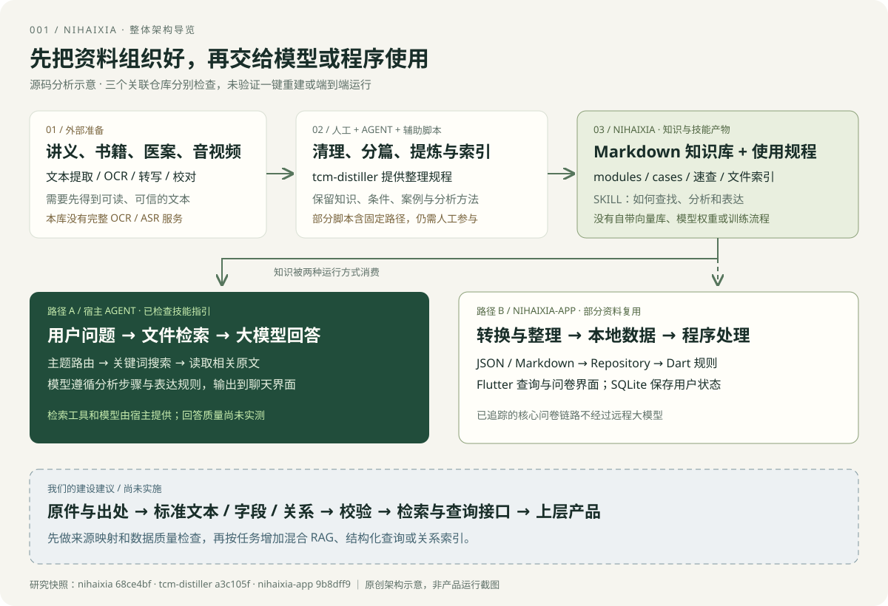

OPEN SOURCE / FIELD NOTES
发现好项目，
把研究变成实践。
一个持续生长的开源项目研究档案。从值得收藏的仓库出发，记录设计、验证想法，留下可复现的结论与可以体验的作品。
4 研究项目2 研究中3 Web 演示
YOUR RESEARCH COMPANION让青团陪你
让青团陪你
发现好项目。
你好，选一个感兴趣的方向，我们一起逛逛。
收藏与偏好只保存在当前浏览器。
暂时没有符合条件的项目。换个关键词，或重置筛选试试。
项目索引
固定编号 · 按研究索引顺序展示01 / DISCOVER
发现与选择
记录项目解决的问题、适用场景和研究价值，保留上游来源。
02 / EXPLORE
拆解与验证
追踪关键设计，通过可复现的实验形成自己的理解。
03 / BUILD
实践与沉淀
用研究笔记、界面截图和 Web 演示串起每一次探索。